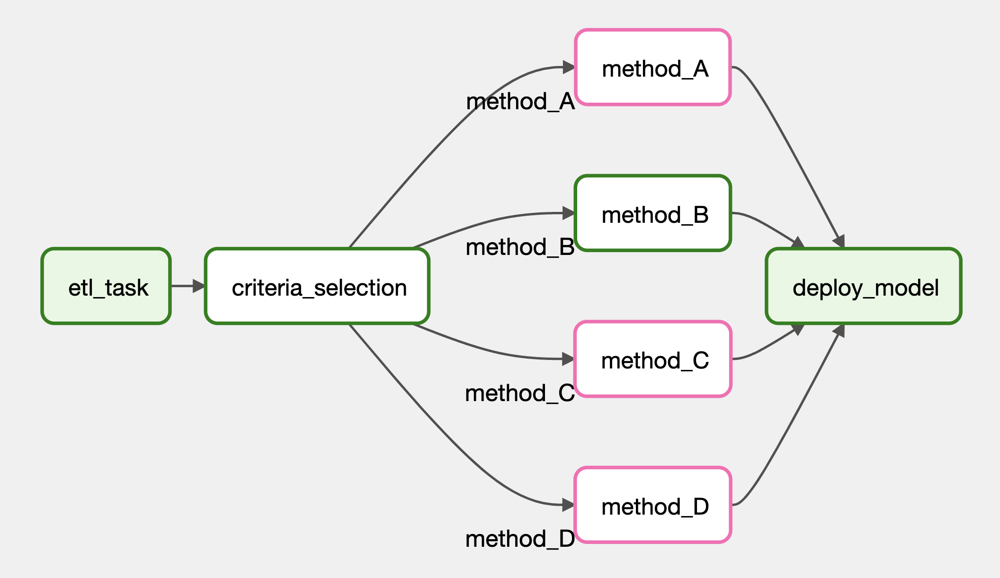

Intro to how to write a dag on Airflow with an example to extract, transform and load data from YouTube API to Postgres database.
This article aims to introduce how to write an airflow dag with an example to build an ETL pipeline from YouTube Data API to a Postgres database. Please refer to the previous article on how to host an Airflow and Postgres Docker container. It is good to have a controlled environment for these two applications in containers so that they will not have any dependency issues.
As we will involve YouTueb Data API in the example, this article will first start with a brief introduction to YouTube Data API, then it will dive into how to write an Airflow DAG. Finally it will provide an ETL pipeline example to be run on Airflow.
To use YouTube Data API, we need to have an API key or an authorised token. Please refer to the previous article to obtain an authorised token. You can get an API key with similar method as shown in the article.
After having either of the above, we can add the following headers when requesting the endpoints:
headers = {"x-goog-api-key": api_key}headers = {"Authorization": f"Bearer {access_token}"}The channels.list method allows us to fetch information about YouTube channels, including their number of subscribers and number of videos. It also offers a list of videos that have been uploaded by this channel. We can utilise this information for further analysis.
Below shows a code snippet to fetch a channel information with this endpoint.
import os
import requests
API_KEY = os.getenv("GAPI_KEY")
url = "https://www.googleapis.com/youtube/v3/channels"
parts = [
"brandingSettings", "contentDetails", "contentOwnerDetails", "id",
"localizations", "snippet", "statistics", "status", "topicDetails"
]
params = {
"id": "UCSXwxpWZQ7XZ1WL3wqevChA", # comma separated channel id. Max 50
"part": ",".join(parts)
}
headers = {"x-goog-api-key": API_KEY}
response = requests.get(url, params=params, headers=headers)
response.json()
# {
# "kind": "youtube#channelListResponse",
# "etag": "Tv4R37RghCrjIhGjwzOU4LMObXU",
# "pageInfo": {...},
# "items": [
# {
# "kind": "youtube#channel",
# "etag": "uSDEMv9Bq-jmBQ944jhPmIThLG4",
# "id": "UCSXwxpWZQ7XZ1WL3wqevChA",
# "snippet": {
# "title": "Apache Airflow",
# "description": "...",
# "customUrl": "@apacheairflow",
# "publishedAt": "2019-06-27T10:06:48Z",
# "thumbnails": {...},
# "localized": {...},
# "country": "US"
# },
# "contentDetails": {
# "relatedPlaylists": {
# "likes": "",
# "uploads": "UUSXwxpWZQ7XZ1WL3wqevChA"
# }
# },
# "statistics": {
# "viewCount": "771386",
# "subscriberCount": "9490",
# "hiddenSubscriberCount": false,
# "videoCount": "176"
# },
# "topicDetails": {
# "topicIds": [...],
# "topicCategories": [
# "https://en.wikipedia.org/wiki/Lifestyle_(sociology)",
# "https://en.wikipedia.org/wiki/Technology",
# "https://en.wikipedia.org/wiki/Knowledge"
# ]
# },
# "status": {
# "privacyStatus": "public",
# "isLinked": true,
# "longUploadsStatus": "longUploadsUnspecified"
# },
# "brandingSettings": {...},
# "contentOwnerDetails": {}
# }
# ]
# }An etag can be found from every response from the YouTube API. It is used to determine if a resource has changed (see more from here). As there is a quota limit on how many times we can call the API on each day, the etag can be used to check with the server if the requested resource has changed. If the resource has not changed, it will return http status 304 and we can reuse the same response from previous request. See the following example.
import os
import requests
API_KEY = os.getenv("GAPI_KEY")
url = "https://www.googleapis.com/youtube/v3/channels"
parts = [
"brandingSettings", "contentDetails", "contentOwnerDetails", "id",
"localizations", "snippet", "statistics", "status", "topicDetails"
]
params = {
"id": "UCSXwxpWZQ7XZ1WL3wqevChA", # comma separated channel id. Max 50
"part": ",".join(parts)
}
headers = {"x-goog-api-key": API_KEY}
response = requests.get(url, params=params, headers=headers)
etag = response.json()["etag"]
# Another request
headers["if-none-match"] = etag # Add previous etag to headers
response2 = requests.get(url, params=params, headers=headers)
response2
# <Response [304]>This section will introduce how to write a Directed Acyclic Graph (DAG) in Airflow. Within the Docker image’s main folder, you should find a directory named dags. Create one if you do not. This directory should link to the containers as it is specified in the docker-compose.yaml.
x-airflow-common:
&airflow-common
image: ${AIRFLOW_IMAGE_NAME:-apache/airflow:2.6.3}
environment:
...
volumes:
- ${AIRFLOW_PROJ_DIR:-.}/dags:/opt/airflow/dags
- ${AIRFLOW_PROJ_DIR:-.}/logs:/opt/airflow/logs
- ${AIRFLOW_PROJ_DIR:-.}/config:/opt/airflow/config
- ${AIRFLOW_PROJ_DIR:-.}/plugins:/opt/airflow/plugins
- ${AIRFLOW_PROJ_DIR:-.}/dag-inputs:/opt/airflow/dag-inputs
- ${AIRFLOW_PROJ_DIR:-.}/dag-outputs:/opt/airflow/dag-outputsInside the dags directory, create a file named trial_dag.py with the following content. It will create a DAG in Airflow and you can find it in the main page of Airflow (default: localhost:8080).
from airflow import DAG
from datetime import datetime, timedelta
from airflow.operators.bash import BashOperator
from airflow.operators.python import PythonOperator
default_args = {
"owner": "airflow",
"retries": 5,
"retry_delay": timedelta(minutes=2)
}
def _task2(w):
print(w)
with DAG(
dag_id="trial_dag",
description="A trial dag",
default_args=default_args,
start_date=datetime(2023,8,1),
# end_date=datetime(2024,7,31),
schedule="@once" # Use `schedule_interval` if using Airflow 2.3 or below
) as dag:
task1 = BashOperator(
task_id="task1",
bash_command=" echo 'hello'"
)
task2 = PythonOperator(
task_id="task2",
python_callable=_task2,
op_kwargs={"w": "world"}
)
task1 >> task2 # The order of task being executed.The snippet above shows a simple DAG definition file. It first imports the required modules from airflow and datetime. Then define the default_args for the dag (see more available key-value pairs here).
There are multiple ways to initialise a dag. This time we used with DAG() as dag: with dag_id, description, schedule, etc. We will see some other methods to define a dag in later sections.
A task in a dag is an operator object. There are two basic operators: BashOperator and PythonOperator. The BashOperator is used to execute bash command and the PythonOperator is used to execute Python functions. The name of the Python function is passed to the python_callable parameter and the arguments of the primitive function can be passed through the operator using the op_kwargs and op_args arguments.
Finally we need to specify the order of the tasks by task1 >> task2.
We can also create custom operators inside the plugins directory which is located at the main Docker image directory. Please make sure the directory is created and specified in docker-compose.yaml. Please also create an empty __init__.py in the plugins directory. Now, we can create a .py file inside the plugins directory to create operators like below.
# plugins/hello_operator.py
from airflow.models import BaseOperator
class HelloOperator(BaseOperator):
def __init__(self, name, *args, **kwargs):
super().__init__(*args, **kwargs)
self.name = name
def execute(self, context):
self.log.info("Input `name`: {self.name}.") # Logging
message = f"Hello {self.name}"
print(message)To use the custom operators, simply import the operators from a module as usual.
from hello_operator import HelloOperator
with Dag() as dag:
task1 = HelloOperator(task_id="task1", name="Bob")
task1Like Gibhub context (see this article), Airflow also provide a way to access information about the running dag and task. As seen in the custom operator, the execute method in the operator class takes in a context argument.
Below shows an example on how to use these context information.
# plugins/hello_operator.py
from airflow.models import BaseOperator
class HelloOperator(BaseOperator):
template_fields = ['name']
def __init__(self, name, *args, **kwargs):
super().__init__(*args, **kwargs)
self.name = name
def execute(self, context): # context is a TypedDict. See below section
message = f"The name of this DAG is {self.name}"
print(message)
ts = context["ts_nodash"] # context is a TypedDict. See below section
print(f"This DAG started at {ts}")# dags/hello_dag.py
from hello_operator import HelloOperator
with Dag() as dag:
task1 = HelloOperator(task_id="task1", name="{{ dag.dag_id }}")
task1The subsections show what information can we obtain from context and context.dag.
As seen from Airflow Github, the context argument is of the Context class defined as below.
class Context(TypedDict, total=False):
conf: AirflowConfigParser
conn: Any
dag: DAG
dag_run: DagRun | DagRunPydantic
data_interval_end: DateTime
data_interval_start: DateTime
ds: str # '2023-08-11'
ds_nodash: str # '20230811'
exception: KeyboardInterrupt | Exception | str | None
execution_date: DateTime
expanded_ti_count: int | None
inlets: list
logical_date: DateTime
macros: Any
next_ds: str | None
next_ds_nodash: str | None
next_execution_date: DateTime | None
outlets: list
params: ParamsDict
prev_data_interval_start_success: DateTime | None
prev_data_interval_end_success: DateTime | None
prev_ds: str | None
prev_ds_nodash: str | None
prev_execution_date: DateTime | None
prev_execution_date_success: DateTime | None
prev_start_date_success: DateTime | None
run_id: str # 'manual__2023-08-11T11:51:11.303634+00:00'
task: BaseOperator
task_instance: TaskInstance | TaskInstancePydantic
task_instance_key_str: str # 'trial_dag__task2__20230811'
test_mode: bool
templates_dict: Mapping[str, Any] | None
ti: TaskInstance | TaskInstancePydantic
tomorrow_ds: str # '2023-08-12'
tomorrow_ds_nodash: str # '20230812'
triggering_dataset_events: Mapping[str, Collection[DatasetEvent | DatasetEventPydantic]]
ts: str # '2023-08-11T11:51:11.303634+00:00'
ts_nodash: str # '20230811T115111'
ts_nodash_with_tz: str # '20230811T115111.303634+0000'
try_number: int | None
var: _VariableAccessors # Airflow variables. See below section
yesterday_ds: str # '2023-08-10'
yesterday_ds_nodash: str # '20230810'{
'concurrency': 16,
'dag_id': 'trial_dag',
'default_args': {'owner': '***', 'retries': 0, 'retry_delay': datetime.timedelta(seconds=120)},
'default_view': 'grid',
'description': 'A trial dag',
'doc_md': None,
'end_date': None,
'fileloc': '/opt/***/dags/trial_dag.py',
'filepath': 'trial_dag.py',
'folder': '/opt/***/dags',
'full_filepath': '/opt/***/dags/trial_dag.py',
'has_on_failure_callback': False,
'has_on_success_callback': False,
'log': <Logger ***.models.dag.DAG (INFO)>,
'logger': <bound method LoggingMixin.logger of <class '***.models.dag.DAG'>>,
'owner': '***',
'params': {},
'parent_dag': None, # A DAG object
'safe_dag_id': 'trial_dag',
'schedule_interval': '@once',
'start_date': DateTime(2023, 8, 1, 0, 0, 0, tzinfo=Timezone('UTC')),
'sub_dag': <bound method DAG.sub_dag of <DAG: trial_dag>>,
'subdags': [],
'tags': [], 'task': functools.partial(<***.decorators.TaskDecoratorCollection object at 0xffff7aafde10>, dag=<DAG: trial_dag>),
'task_count': 2,
'task_dict': {'task1': <Task(BashOperator): task1>, 'task2': <Task(HelloOperator): task2>},
'task_ids': ['task1', 'task2'],
'tasks': [<Task(BashOperator): task1>, <Task(HelloOperator): task2>],
'timezone': Timezone('UTC'),
}This section describe how to write a DAG with the TaskFlow API paradigm.
from airflow.decorators import task, dag
from airflow.operators.python import get_current_context
from datetime import datetime, timedelta
default_args = {
"owner": "airflow",
"retries": 0,
"retry_delay": timedelta(minutes=2)
}
@dag(
dag_id="trial_dag",
schedule="@once",
start_date=datetime(2023,8,1),
default_args=default_args
)
def trial_dag():
@task(task_id="task1")
def task1():
print("hello")
@task(task_id="task2")
def task2(name):
context = get_current_context()
print(f"The name of the DAG is {name}")
dag_loc = context["dag"].fileloc
print(f"The location of the DAG is {dag_loc}")
task1() >> task2("{{ dag.dag_id }}") # Set the order of tasks
trial_dag() # Initialise the DAGfrom airflow import DAG
from datetime import datetime, timedelta
from airflow.models import BaseOperator
from random import randint
import numpy as np
default_args = {
"owner": "airflow",
"retries": 0,
"retry_delay": timedelta(minutes=2)
}
class ETLOperator(BaseOperator):
template_fields = ['name']
def __init__(self, name, *args, **kwargs):
super().__init__(*args, **kwargs)
self.name = name
def execute(self, context):
self.log.info(f"Input parameter: {self.name}")
return f"This DAG is {self.name}"
class ModelTrainingOperator(BaseOperator):
template_fields = ['name']
def __init__(self, name, *args, **kwargs):
super().__init__(*args, **kwargs)
self.name = name
def execute(self, context):
self.log.info(f"Previous output: {self.name}")
task_id = context["ti"].task_id
return {"task_id": task_id, "score": randint(1, 10)}
class ModelSelectionOperator(BaseOperator):
def __init__(self, models, *args, **kwargs):
super().__init__(*args, **kwargs)
self.models = models
def execute(self, context):
models = self.models.split(",")
result = []
for model in models:
result.append(context["ti"].xcom_pull(model))
self.log.info(result)
best_model = result[np.argmax([x["score"] for x in result])]
self.log.info(f"Best model: {best_model}")
with DAG(
dag_id="trial_dag",
default_args=default_args,
start_date=datetime(2023,8,1),
schedule="@once",
description="A trial dag"
) as dag:
etl_task = ETLOperator(
task_id="etl_task",
name="{{ dag.dag_id }}"
)
model_training_task1 = ModelTrainingOperator(
task_id="model_training_task1",
name="{{ ti.xcom_pull(task_ids=['etl_task']) }}"
)
model_training_task2 = ModelTrainingOperator(
task_id="model_training_task2",
name="{{ ti.xcom_pull(task_ids=['etl_task']) }}"
)
model_training_task3 = ModelTrainingOperator(
task_id="model_training_task3",
name="{{ ti.xcom_pull(task_ids=['etl_task']) }}"
)
model_selection_task = ModelSelectionOperator(
task_id="model_selection_task",
models="model_training_task1,model_training_task2,model_training_task3"
)
etl_task >> [model_training_task1, model_training_task2, model_training_task3] >> model_selection_taskfrom airflow import DAG
from datetime import datetime, timedelta
from airflow.models import BaseOperator
from airflow.operators.branch import BaseBranchOperator
from airflow.operators.empty import EmptyOperator
from airflow.utils.edgemodifier import Label
from random import randint, choice
default_args = {
"owner": "airflow",
"retries": 0,
"retry_delay": timedelta(minutes=2)
}
class CriteriaBranchingOperator(BaseBranchOperator):
def __init__(self, methods, *args, **kwargs):
super().__init__(*args, **kwargs)
self.methods = methods
def choose_branch(self, context):
return choice(self.methods)
class ModelTrainingOperator(BaseOperator):
def __init__(self, *args, **kwargs):
super().__init__(*args, **kwargs)
def execute(self, context):
task_id = context["ti"].task_id
return {"task_id": task_id, "score": randint(1, 10)}
with DAG(
dag_id="trial_dag",
default_args=default_args,
start_date=datetime(2023,8,1),
schedule="@once",
description="A trial dag"
) as dag:
etl_task = EmptyOperator(
task_id="etl_task"
)
methods = ["method_A", "method_B", "method_C", "method_D"]
criteria_selection = CriteriaBranchingOperator(
task_id="criteria_selection",
methods=methods
)
etl_task >> criteria_selection
deploy_model = EmptyOperator(
task_id="deploy_model",
trigger_rule="none_failed_min_one_success"
)
for method in methods:
method_task = ModelTrainingOperator(
task_id=method
)
criteria_selection >> Label(method) >> method_task >> deploy_model
For encryption, in docker-compose.yaml, set the following parameters.
AIRFLOW__CORE__FERNET_KEY: ${AIRFLOW__CORE__FERNET_KEY:-}Go to Admin –> Variables, set up variables.
Set environment with name AIRFLOW_VAR_<KEY_OF_THE_VAR>
https://airflow.apache.org/docs/apache-airflow/stable/security/secrets/mask-sensitive-values.html
In previous article, we have successfully obtained more than 300 channel ids. We will put them into
https://wilsonkkyip.github.io/posts/2023-08-08-recursive-programming-querying-nested-json-in-python/
London is the capital city of England.
Paris is the capital of France.
Tokyo is the capital of Japan.
https://wilsonkkyip.github.io/posts/2023-08-09-sample-youtube-channels-id-with-async-functions/